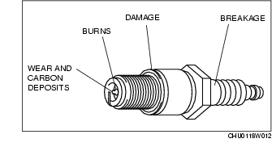
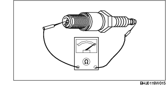

Workshop Manual ➭ ENGINE ➭ IGNITION SYSTEM[L8, LF] ➭ SPARK PLUG INSPECTION [L8, LF]
SPARK PLUG INSPECTION [L8, LF]
id0118a3800500
{: #wp1058563}
Specification
Spark plug type
L8: L303 18 110 (ITR5F13) {: #wp1058587}LF: L3G2 18 110, L3Y1 18 110
Plug Gap Inspection
Caution
• To avoid possible damage to the tip, do not adjust the plug gap. {: #wp1059588}• To prevent damaging the tip, use a wire type plug gap gauge when inspecting the plug gap.
- Measure the spark plug gap using a wire type plug gap gauge.
• If it exceeds the specification, replace the spark plug.
Spark plug gap
1.25-1.35 mm {0.050-0.053 in}
Cleaning
Caution
• Carbon may adhere to the tip of the spark plug during vehicle delivery or repeated short distance driving during the winter time. If there is any malfunction such as rough idling or start difficulty due to carbon adhesion causing plug fouling, burn off the carbon by performing no-load racing of the engine. {: #wp1059589}• When performing the no-load racing, apply the side brake and foot brake, move the shift lever to neutral (MT), or the selector lever to P position (AT) to prevent an accident and serious injury. {: #wp1058733}• To avoid possible damage to the spark plug tip, do not use a wire brush for cleaning.
*Note*{: #wp1058754}
• To avoid possible damage to the tip, use gasoline to clean the spark plugs after removing dirt. {: #wp1059590}• If the accelerator pedal is depressed continuously for a specified time, the engine speed may decrease to the idle speed. This is due to the fuel cut control operation, which prevents overheating, and it does not indicate a malfunction. {: #wp1058772}• Do not perform no-load racing at high engine speed continuously for 10 s or more.
- If there is carbon adhering to the spark plug, perform no-load racing at 4,000 rpm for 2 min, 2 times.
Visual inspection
- Inspect the following items:{: #wp1058852}

• If any of the following malfunction are indicated, replace the spark plug.
- Insulator breakage {: #wp1058893}- Worn electrode {: #wp1058907}- Damaged gasket {: #wp1058917}- Badly burned insulator (sparking side)
Resistance Inspection
- Measure the resistance of the spark plug using a tester as shown in the figure.
• If not within the specification, replace the spark plug.
Spark plug resistance [25 °C {77 °F}]
3.0-7.5 kilohms
